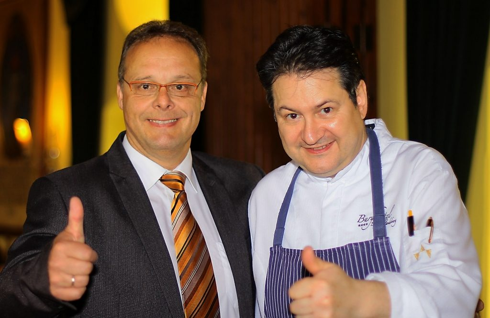
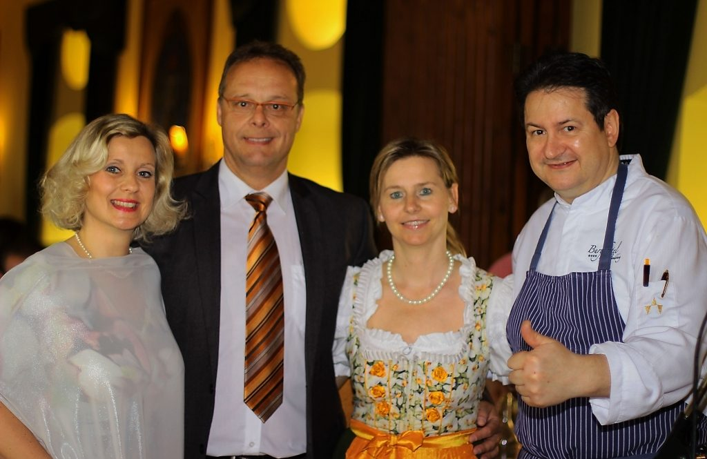

Biedermeierstüberl
Für bis zu 20 Personen – der intime Rahmen für kleine Runden und Menüabende.
Burgrestaurant
Die Burg Landsberg vereint historischen Charme mit einem ausgezeichneten Gourmetrestaurant. Küchenchef Karl Christian Kollmann und sein Team kombinieren internationale und österreichische Küche zu außergewöhnlichen Gaumenfreuden.
Öffnungszeiten
Betriebsurlaub: 23.08.2026 bis 02.09.2026. Wir bitten um Tischreservierung unter +43 3462 5656. Unser Restaurant ist auch über weinlandgast.com buchbar.

Unsere Räume
Feiern Sie Ihre privaten Feste – Taufen, Geburtstage, Firmungen – oder Betriebsfeiern in stilvoller und zugleich romantischer Umgebung.
Für bis zu 20 Personen – der intime Rahmen für kleine Runden und Menüabende.
Für bis zu 100 Personen – der große Saal für Feiern, Bankette und Firmenabende.
Mit Ausblick auf die Stadt Deutschlandsberg und das umliegende Weinland.

Kulinarische Gutscheine
Gerne stellen wir auch individuelle Wertgutscheine oder Übernachtungsgutscheine aus.
Mittwoch bis Samstag von 12.00 bis 14.30 Uhr und von 18.00 bis 21.30 Uhr. Sonntag, Montag und Dienstag sind Ruhetage.
Ja. Für private Feste und Betriebsfeiern stehen Biedermeierstüberl (bis 20 Personen), Wappensaal (bis 100 Personen) und die Terrasse zur Verfügung. Details finden Sie unter Feiern & Seminare.
Ja, die Halbpension mit 3-Gang-Abendmenü kostet € 39,00 pro Person und kann zum Zimmer dazugebucht werden.
Über unsere Gutscheine: Candle-Light-Dinner in 4 Gängen € 72,00 (mit Weinbegleitung € 100,00), in 5 Gängen € 85,00 (mit Weinbegleitung € 118,50) oder Frühstück à la Carte € 25,00. Die Bestellung läuft online, den Gutschein drucken Sie selbst aus.
Unser Restaurant ist auch über weinlandgast.com buchbar. Wir bitten um Tischreservierung unter +43 3462 5656.
